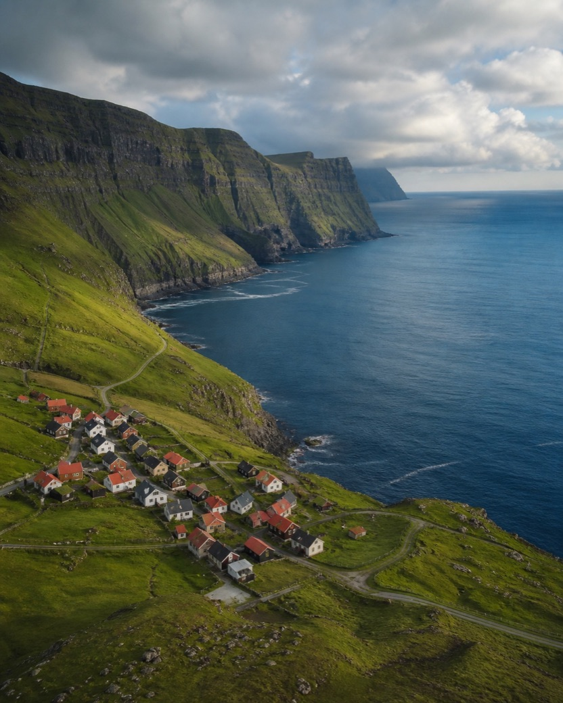
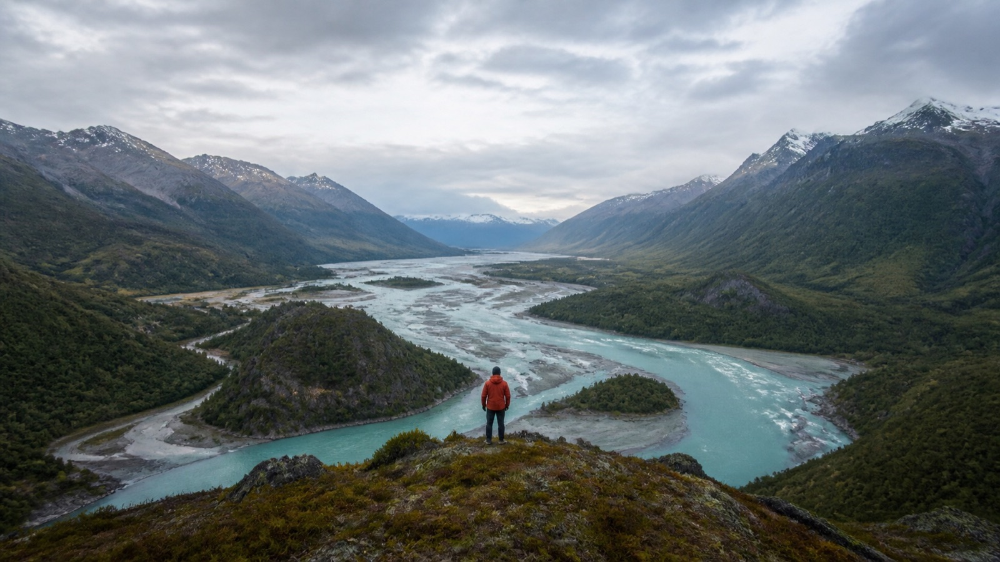
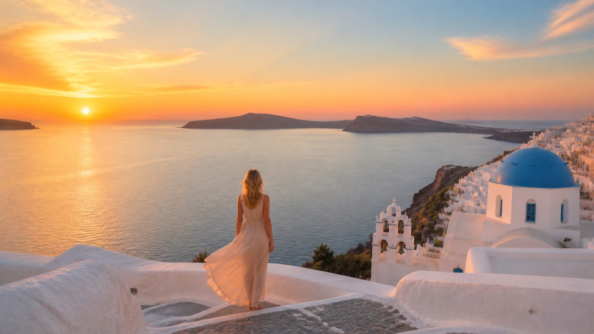
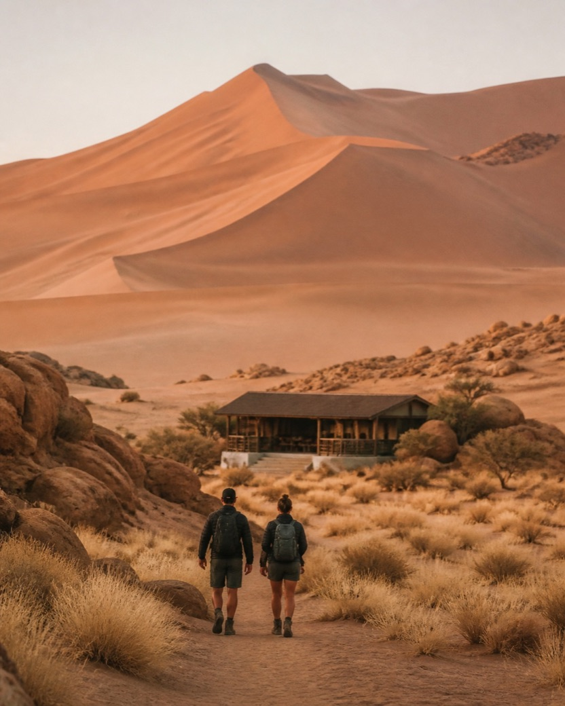
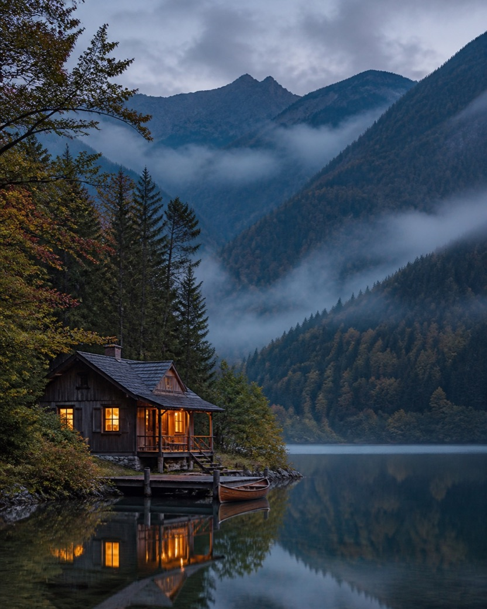
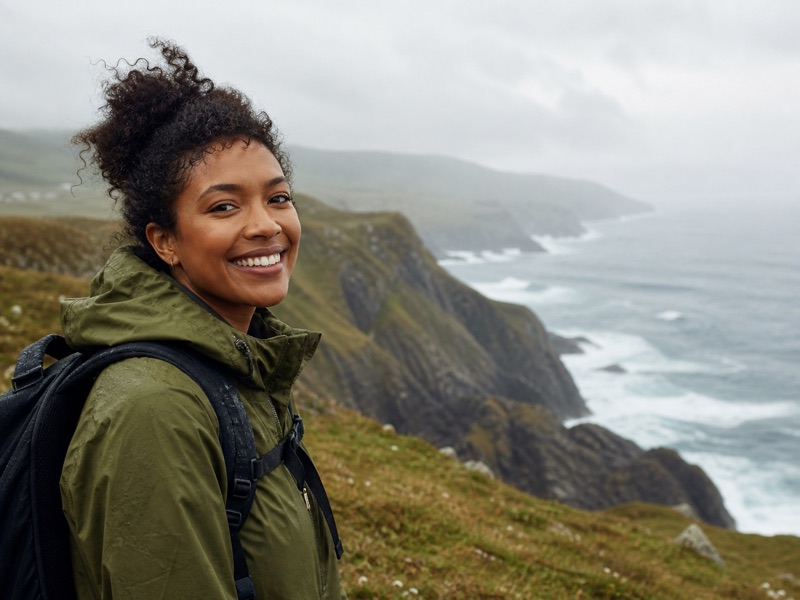
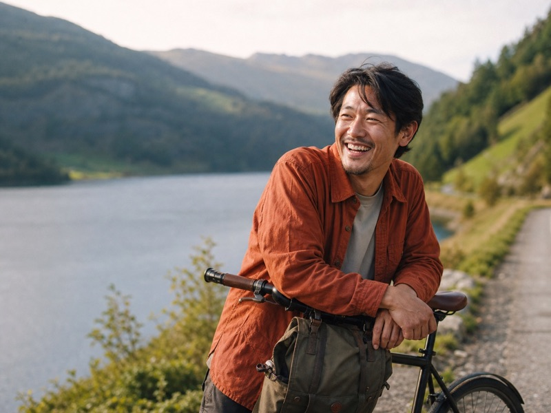

Cliffs & quiet villages
Faroe Islands
$2,480per person


Small groups. Remarkable places.
Thoughtful routes through landscapes that reward your attention.
Explore journeysJourneys worth the distance
Each small-group departure balances wild landscapes, local knowledge, and enough time to be fully present.

Faroe Islands

Namibia

Japanese Alps
Why Drift North
We build every route with people who know the landscape intimately. Fewer stops and smaller groups create room for weather, conversation, and the moments no itinerary can schedule.
How we plan every route →What stays constant
Three commitments guide every journey we make.
Routes are shaped with guides, hosts, and makers who call each place home.
We leave breathing room in every day instead of racing between landmarks.
Small groups and independent stays keep more value within local communities.
Traveler stories

“Nothing felt rushed. We came home remembering people, weather, and tiny details—not just viewpoints.”
Amara LewisCliffs & quiet villages

“The route had structure without feeling scripted. Every day left room for discovery.”
Kenji SatoMist, cedar & still water
Your next route
Talk with a route planner and find the journey that fits your pace.
Start planning